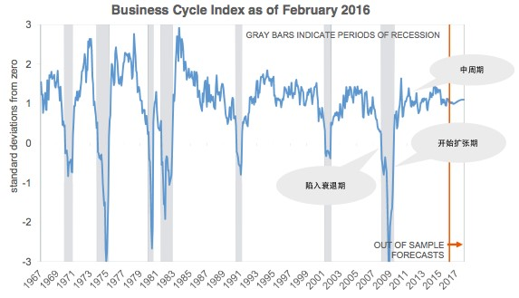
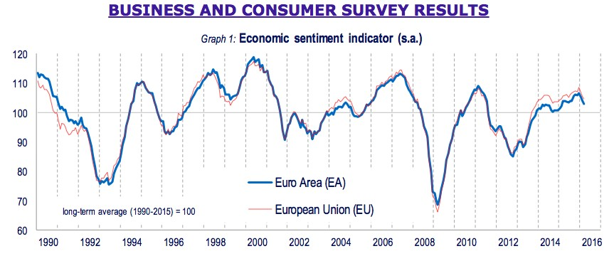
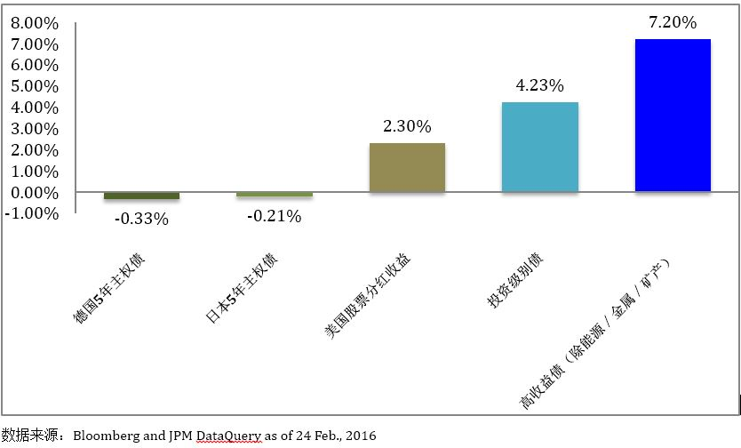

当提到基金投资时，很少有人会想到债券基金的投资，即便有，投资者的误解往往会把债券基金当作一种有持续恒定回报或者是风险较低、回报也较低的投资品种。因此，一旦投资债券基金发生亏损，投资者比投资股票基金而发生的亏损更难接受
诚然，债券基金与股票基金相比具有较低的风险纬度，但并不是无风险的投资，低风险纬度只是表明其比股票基金或其它投资工具具有更低的价格波动性。然而，在特定的经济及利率环境下，债券基金（债券）价格也可能出现快速的上升或下跌，从而加剧价格的波动性，而且债券基金投资不同的债券标的，其收益表现出的波动性也不尽相同。
那么，这能给投资者带来怎样的启示呢？又如何把握住这样的机会呢？
内容摘要：
全球许多投资者面临这样的困境：锁定在低收益甚至负收益的传统主权债还是配置于估值逐步失去吸引力的较高风险的资产，如：股票。
对于投资者，可能有更好风险回报的选择：投资级别公司债、选择性高收益债以及选择性银行信贷资产。这些资产有可能提供给投资者接近股票的回报，但是历史波动率却要小得多。
基本面、市场技术面以及具有吸引力的估值持续支持信用债市场，我们相信美国经济今年能够避免衰退。
在继续分析之前，让我们看一下不同信用级别的债券在经济周期中不同阶段的投资机会：
在图表一中，债券的信用级别（风险纬度）是按圆心向外发散的方向逐步降低（风险加大）。处于圆心中心的是信用级别最高的政府／主权债（需要指出的是：政府债也根据不同国家给予不同的信用评级。在这里，我们所指的是发达国家的政府债。），逐步向外发散至风险级别最高的股票与房地产。
图表二、三表示的是美国以及欧元区（欧盟）的经济周期。我们认为：当经济开始陷入衰退时，政府债与主权债表现往往战胜大部分资产，而当经济处于最初的扩张时，高风险资产的表现，如：股票，往往好于其它类别资产。
图表一：图表二：美国商业周期指数

数据来源：National Bureau of Economic Research
图表三：商业及消费调查(欧元区/欧盟)

数据来源：欧盟
从图表的对比上可以看出，欧元区（欧盟）与美国的经济周期非常相近。目前市场的分歧在于：当前的阶段是处于经济的中周期还是已过经济顶峰开始陷入衰退。
正是因为我们对经济周期的分析与判断，我们相信，投资者可以在年初收获满满的政府债与主权债的投资上逐步由核心区域转向外围区域，由低收益，甚至负收益的资产转向风险收益较高的资产 － 投资级别企业债、高质量的高收益债以及银行信用债资产。这一观点与我们“2016年第1季度全球投资季报”中关于债券投资的观点相符。但需要指出的是：投资者在选择高收益债时，尽量避免能源与大宗商品相关的资产。
信用债的投资是有吸引力的，这主要是因为：
- 大多数的债券发行企业具有坚固与稳定的基本面，企业管理者的管理能力亲和于债券持有人。
- 市场技术指标将不断提升吸引资本流入美国高质量的信用资产。
- 企业债的整体收益率与估值具有吸引力 － 信用基差大于基本面与经济周期显示其应该有的水平。
尽管有一些迹象表明：部分企业的财务报表存在边际退化，除金属与能源行业外，大多数企业的基本面保持完整。这也是我们相信美国的经济扩张正处于中周期，这也保持企业违约率处于较低水平（能源部分除外），并对信用提供支持。鉴于发达国家政府债非常低的甚至是负的收益（见下图），投资者对于美国信用债的需求也会上升。重要的是：逐步上升的的美国利率将引导国外投资者对于美国金融资产的需求，这也将推动潜在的信用债表现，得益于全球投资者对于稳定收益的追求。
投资收益率比较: 数据来源：Bloomberg and JPM DataQuery as of 24 Feb.,2016
通过一些投资行为的分析，我们有理由相信，2016年的资本流入会倾向于美国信用债市场，尤其是美国经济能避免衰退并继续目前的增长步伐。前景尤其有利于工业及部分受到高准入门槛要求、高于平均增长以及具有定价权的行业的信用资产，并且公司的管理层的行为能代表债券持有人的利益。从行业的角度，我们继续看好价值与机会突出的消费与房屋居住相关的公司，同样看好建筑产品、银行、航空、高质量房地产投资信托(REITs)、选择性传媒行业、健康护理以及特殊医药行业(如：肿瘤与免疫)。
我们对欧元区政府债以及日本政府债保持一定的谨慎，年初的这两个地区的政府债资产上扬主要是受到市场避险情绪以及利率下降的影响并透支了部分由于持续的低利率与负利率推动的债券价格上扬。随着低利率以及负利率政策的持续，政府债价格的持续上升并不可持续，相反，欧元区的政府资产购买计划让我们看好这一区域投资级别的企业债以及高质量的高收益债。这一点上，我们的看法与美国市场一致。
以上分析基于“赚洋钱”团队自身的分析以及借鉴大量的专业研究报告。若要关注更多的市场分析，请关注“赚洋钱”微信公众号的“投资策略”栏目。